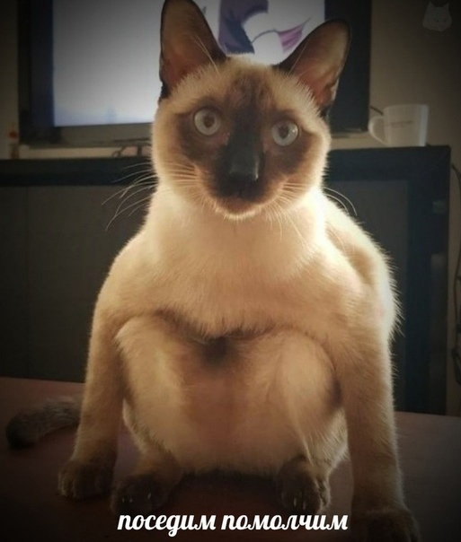

<!DOCTYPE html>
<html lang="en">
<head>
    <meta charset="UTF-8">
    <title>яндекс карта</title>
</head>
<body>
    <script src="https://api-maps.yandex.ru/2.0-stable/?apikey=YOUR_APY_KEY&load=package.full&lang=ru-RU" type="text/javascript"></script>
    <div id="myMap" style="width: 700px; height: 700px;"></div>
<script>
    ymaps.ready(init);

    function init() {
        var myMap = new ymaps.Map ('myMap', {
            center: [54.195437, 37.618764],
            zoom: 13,
            type: 'yandex#map'
        });
        myMap.behaviors.enable('scrollZoom');
        // Добавляем стандартные элементы управления
        myMap.controls.add('zoomControl').add('typeSelector').add('mapTools');
        var myPlacemark = new ymaps.Placemark([54.185826, 37.604897], {
            iconContent: 'сижу',
            name: 'сижу здеся в цит',
            address: 'Фридриха Энгельса ул., 40, Тула',
            phone: 'тел ',
            photo: '',
        }, {
            preset: 'twirl#blueStretchyIcon'
        });
        var kremlPlacemark = new ymaps.Placemark([54.195073, 37.620721], {
            // Свойства
            iconContent: 'кремль',
            name: 'кремль',
            address: 'Менделеевская ул., 12В, Тула',
            phone: 'тел: +7 (4872) 77-49-34 ',
            photo: '',
        }, {
            // Опции
            preset: 'twirl#redStretchyIcon' // иконка растягивается под контент
        });
        var myMapCollection = new ymaps.GeoObjectCollection();
        // Добавляем метки в коллекцию геообъектов
        myMapCollection
            .add(kremlPlacemark)
            .add(myPlacemark);
        // Создаем шаблон для отображения контента балуна
        var myMapBalloonLayout = ymaps.templateLayoutFactory.createClass(
            '<p><strong>$[properties.name]</strong></p>' +
            '<p>$[properties.address]</p>' +
            '<p>$[properties.phone]</p>' +
            '<p>$[properties.photo]</p>'
        );
        // Помещаем созданный шаблон в хранилище шаблонов.
        // Теперь наш шаблон доступен по ключу 'myMap#officeslayout'
        ymaps.layout.storage.add('myMap#officeslayout', myMapBalloonLayout);
        // Задаем наш шаблон для балунов геобъектов коллекции
        myMapCollection.options.set({
            balloonContentBodyLayout:'myMap#officeslayout',
            // Максимальная ширина балуна в пикселах
            balloonMaxWidth: 350
        });
        // Добавляем коллекцию геообъектов на карту
        myMap.geoObjects.add(myMapCollection);
    }
</script>
</body>
</html>